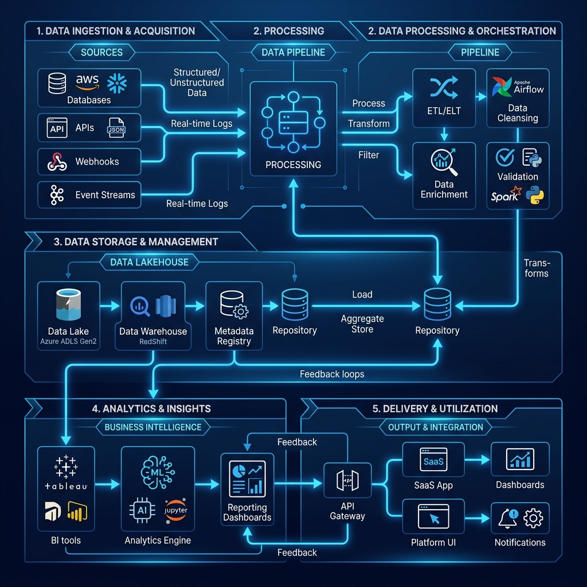

Your trusted offshore partner for building reliable, scalable, and future-ready digital solutions.
APTIT is a results-driven offshore IT partner specializing in building and scaling Global Capability Centres (GCCs) and Offshore Development Centres (ODCs). We combine deep technical expertise with structured execution to deliver high-performing global teams that drive scalable outcomes.
Collaborating with clients across key global markets with distributed GCC and offshore teams.
Agile, cross-functional squads built to deliver quality without delays or dependencies.
Transparent processes, clear ownership, and long-term commitment to your success.
"Founded to transform offshore from a cost decision into a strategic advantage — through aligned, high-performing global teams."
To empower businesses to scale globally by building and managing high-performance GCCs, ODCs, and offshore engineering teams.
At APT, we deliver secure, scalable software, web, and mobile solutions designed for real-world impact. By combining deep technical expertise with agile execution, we help organizations innovate faster, optimize costs, and bring high-quality digital products to market with confidence.
To be a globally trusted partner in building and scaling engineering ecosystems through GCC, ODC, and offshore models.
We envision a future where businesses seamlessly extend their capabilities with APT — creating world-class digital products, accelerating innovation, and driving sustainable growth through technology that is purposeful, resilient, and built to last.
Offshore development gives you instant access to world-class talent — ready to build, scale, and ship.
Reduce overhead while increasing output and efficiency. No hiring delays, no fixed overhead.
Dedicated teams that accelerate delivery and shorten time-to-market. Continuous development, around the clock.
Access the right skills exactly when you need them. Full control. Full ownership. Zero compromise.
Scale teams dynamically without operational friction as your roadmap evolves.
From Global Teams to Digital Products.
We design, set up, and scale GCCs that operate as a true extension of your business combining talent, processes, and infrastructure.
Get exclusive, high-performing teams that integrate seamlessly with your workflows with full visibility and control.
Access global talent to accelerate delivery and reduce hiring friction without compromising on quality or ownership.
Create high-performance web applications using modern frameworks, ensuring speed, security, and seamless user experiences.
From enterprise platforms to tailored systems, we engineer software that aligns with your processes and scales with business.
We build and integrate robust REST and GraphQL APIs to ensure smooth communication enabling automation and scalability.
We craft intuitive, user-first interfaces that enhance usability, improve retention, and deliver meaningful digital experiences.
We develop high-quality mobile applications for iOS and Android, focused on performance, usability, and scalability.
At APT IT, technology isn’t just a toolkit—it’s a strategic advantage. Our engineers are deeply experienced in today’s most in-demand technologies.
We don’t chase trends—we stay ahead of them. Every stack decision is made to maximize performance, scalability, and long-term growth.
FRONTEND ENGINEERING
Crafting fast, intuitive experiences.
React.js · Vue.js · Next.js · TypeScript
BACKEND DEVELOPMENT
Building robust, secure systems.
Node.js · Python · PHP · Laravel · Express
DATA & DATABASES
Efficient, scalable data architectures.
MongoDB · PostgreSQL · MySQL · Redis
CLOUD & DEVOPS
Seamless deployment & scalability.
AWS · Docker · Kubernetes · CI/CD
A fully aligned, long-term team of developers, QA specialists, and a project manager working as an extension of your business. Ideal for scaling products that require continuous innovation and ownership.
Clear requirements, defined timelines, and predictable costs — all agreed upfront. Best suited for projects with well-documented specifications and measurable outcomes.
Stay agile with a flexible model where you pay for actual effort (Time & Materials). Perfect for evolving projects, rapid iterations, and situations where priorities shift over time.
At APT, we don’t just build software rather we engineer outcomes. Every engagement starts with deep discovery.
We operate in focused two-week sprints, giving you continuous visibility, measurable progress, and the flexibility to adapt as your product evolves.

We dive beyond requirements to understand your business model, users, and success metrics — ensuring we build what truly matters.
Our experts design scalable, future-ready systems tailored to your needs — whether it’s a product build, GCC setup, or offshore delivery model.
Dedicated APT teams work in rapid sprints, delivering high-quality code with regular demos, feedback loops, and full transparency.
We embed quality at every stage with automated testing, performance checks, and seamless integrations.
From cloud setup to go-live, we ensure a smooth, secure, and optimized launch — with zero surprises.
Post-launch, we stay with you — optimizing performance, scaling teams, and evolving your product as your business grows.
At APT, quality and security aren’t phases but they’re embedded into everything we build. From dedicated offshore teams to full-scale GCCs, we ensure every product is resilient, secure, and production-ready from day one.
Engineered a scalable headless eCommerce platform powered by a dedicated offshore team. Enabled dynamic catalogue management, multi-vendor onboarding, and seamless checkout experiences — resulting in significantly improved transaction success rates.
Delivered a secure, enterprise-grade telemedicine platform through an ODC model. Integrated video consultations, digital prescriptions, and compliant payment systems — improving operational efficiency.
Built and deployed an AI-powered credit risk scoring engine within a high-performance offshore setup. Integrated real-time financial APIs and advanced analytics to enable faster, more accurate lending decisions at scale.
Developed an AI-driven contract review assistant using modern LLM frameworks via a dedicated engineering team. Automated document analysis and significantly accelerated legal workflows.
"APT IT transformed our offshore capabilities. Their developers integrated seamlessly into our agile pods, significantly accelerating our product roadmap without compromising on quality. The execution speed and technical depth they bring are unparalleled."
CTO
Enterprise SaaS Company
The APT Edge: From GCCs to fully managed offshore teams, we don’t just deliver projects — we build scalable engineering capabilities that drive measurable business outcomes.
Let's discuss your technical roadmap and see how our engineering pods can accelerate your vision.
contact@aptiti.com | Global Presence